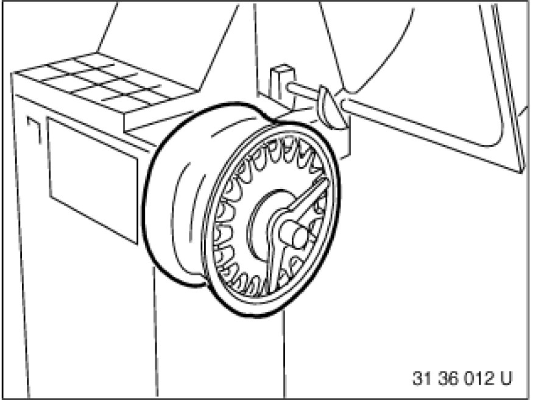
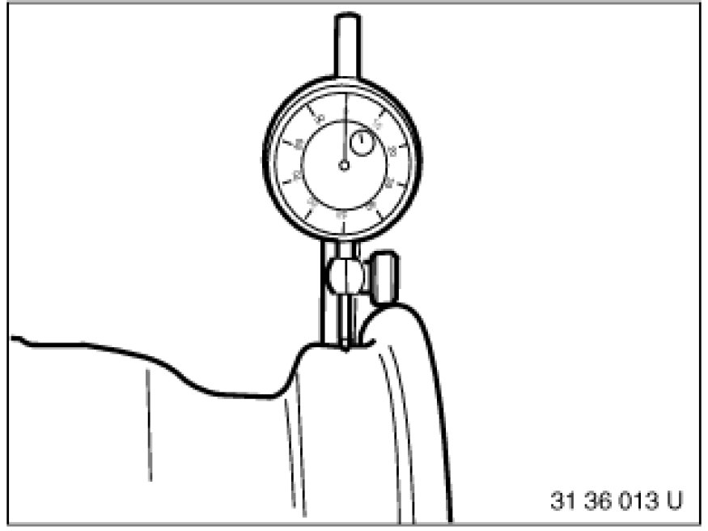
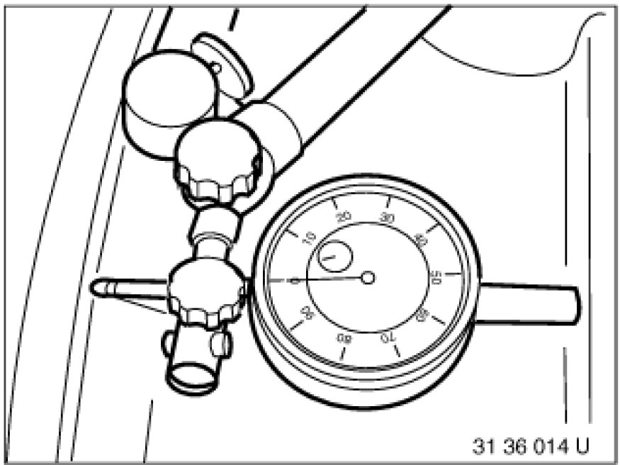

Checking Rim for Face and Radial Runout
36 10 715 - Checking rim for face and radial runout

Necessary preliminary tasks:
- Remove wheel Removing or Installing Front or Rear Wheel
- Checking front and rear wheel for face and radial runout Checking Front and Rear Wheel for Face and Radial Runout
- Pull tire off rim
- Remove fitted balance weights
- Remove dirt from rim well and rim flange

Important!
Disk wheels must not be repaired!

Mount disk wheel in balancing machine.

Use suitable wheel centering element supplied with corresponding balancing machine.
1. Basic flange
2. Wheel centering element
3. Type flange
4. Clamping nut
Also refer to section on Workshop Equipment.

Place dial gauge sensor on rim shoulder.
Turn wheel by hand and measure max. radial runout.
Carry out measurement on both rim shoulder sides.
Note:
Dial gauge must be vertical to rim shoulder.

Position sensor on rim flange.
Turn wheel by hand and measure max. lateral runout.
Carry out measurement on both rim flanges.
Note:
Dial gauge must be vertical to rim flange.
Important!
Avoid transformation errors during subsequent installation tasks Stationary Wheel Balancing.